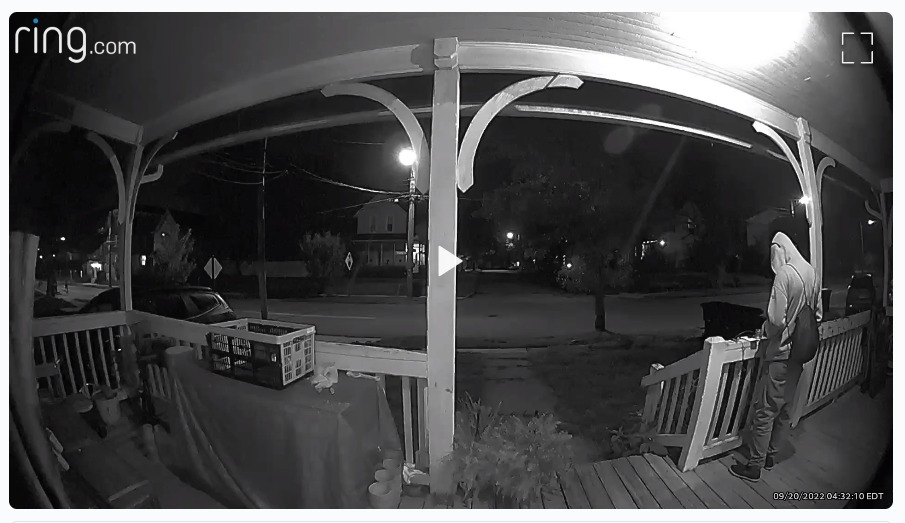

Timeline photos
I saw this post on my Ring Neighbors Feed. Apparently this guy was on this person's porch for an hour and a half.
They called the police. And the police never came.
I once had a quarter stick of dynamite in the trunk of my car (long story; don't ask). I called the police and it took them over 5 hours to come and get it.
This isn't a diss on the police. Policing a city like Akron is hard.
I would like to see more neighborhood watch groups. (they also come with their own problems, I get it.)
This guy is probably just homeless and had nowhere else to go. I would have been happy to go over to this house and ask this guy to leave. I'm quite sure he would have.
Places like Next Door and Ring Neighbors are heading that way. But they aren't there yet.
A good neighborhood watch program is going to start with getting to know your neighbors. If you want to start something like this, I'd suggest making a flyer, pass it out to all the houses on your street. The flyer would invite all your neighbors to your house for a Neighborhood Watch meeting. Then just go from there.
We have to stop expecting the government to solve our problems for us. They are just not good at it.